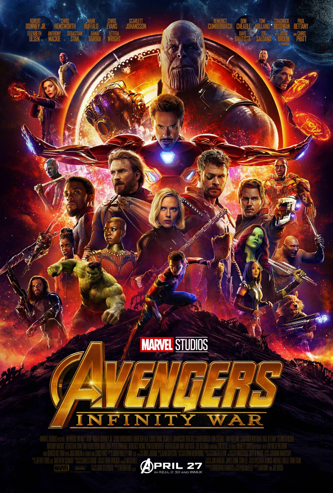

Avengers: Infinity War (2018)
Overview
Avengers: Infinity War (2018) is a Marvel superhero film that follows the Avengers and their allies as they battle against the powerful villain Thanos. Thanos seeks to collect all six Infinity Stones, which will grant him the power to eliminate half of all life in the universe with a snap of his fingers. The Avengers, along with the Guardians of the Galaxy and other heroes, try to stop him across various locations, including Earth and space.